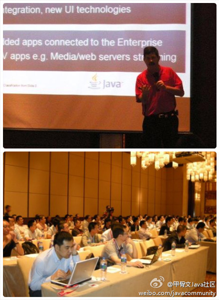

Ada李力
2011-11-11

Ada李力
2011-11-11
今天接到@心炯明-Michael 电话, 又是要找Java开发人员, 还指名要前Sun的. 我说很奇怪啊, 从来都是听到大家在找开发人员, 我还没遇到开发人员主动来找工作机会的. 现在供需严重失衡吗? 这对开发人员, 可是好消息.
Ada李力
2011-11-11
参会人数看起来, 深圳的开发者对JavaME的兴趣更大, 因为那里是手机OEM, 山寨的大本营?
@甲骨文Java社区:
甲骨文公司于本周在深圳和北京举办了两场针对于移动Java开发人员的大会。甲骨文嵌入式Java的社区负责人Roger Brinkley作为重要嘉宾进行了主题演讲，介绍了JavaME平台的未来发展趋势：JavaME平台将完全与JavaSE平台同步发展，也就是说，最新版本的JavaME将支持JavaSE7
- 